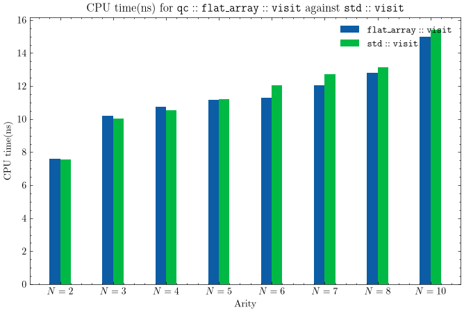

Introduction
A month ago I published a custom implementation of std::visit that stores function pointers in a flat one-dimensional array. If you haven’t read it, start there - this post builds directly on top of it.
visit implementation using flat arrays
For completeness, this is the implementation of visit using a one-dimensional array.
visit implementation using multi-dimensional arrays
A multidimensional array is an array of T elements, where the type T is a generic type - either a scalar or an array itself. Hence, a multidimensional array can be easily coded up as follows:
namespace qc{
/**
* @brief A light n-dimensional array.
*/
template<typename T, std::size_t Size>
struct poly_array{
T m_buffer[Size] = {};
constexpr T& operator[](std::size_t idx){
return m_buffer[idx];
}
// Base case
decltype(auto) constexpr at(std::size_t index){
return m_buffer[index];
}
// Case with a pack of indices
template<typename... Indices>
decltype(auto) constexpr at(std::size_t index, Indices... indices){
return m_buffer[index].at(indices...);
}
};
}The .at(std::size_t, Indices...) method accepts a variadic pack of indices. As a concrete example, if I define a multi-dimensional array a of dimensions \(2 \times 3 \times 4\), a is a collection of two \(3 \times 4\) matrices. So, a.at(0,1,2) is (1,2)-th element in the 0-th matrix. Hence, we should recursively invoke a[0].at(1,2).
Next, we write a helper struct called dispatcher. The dispatcher has a static constexpr method called dispatch that invokes any callable on a pack of variants. It’s basically a smart wrapper over std::invoke, that checks the return type of the callable at compile-time and dispatches to an appropriate branch.
template<size_t... Indices>
struct dispatcher{
template<typename Func, typename... Vs>
static constexpr auto dispatch(Func&& f, Vs&&... vs){
using return_type_t = decltype(std::forward<Func>(f)(std::get<0>(std::forward<Vs>(vs))...));
if constexpr(std::is_same_v<return_type_t, void>){
std::invoke(std::forward<Func>(f), std::get<Indices>(std::forward<Vs>(vs))...);
}else{
return std::invoke(std::forward<Func>(f), std::get<Indices>(std::forward<Vs>(vs))...);
}
};
};Here is the complete code-listing.
Git Repo
The source code for the above implementations can be found at github.com/quasar-chunawala/qc-visit.
Benchmarking results
I benchmarked the qc::flat_array::visit implementation against std::visit. In order to measure performance accurately and ensure that the results of benchmarking are consistent and reproducible, my setup was as follows:
- Disable CPU Performance scaling. CPU performance scaling enables the operating system to scale the CPU frequency up or down in order to save power or improve performance. Scaling can be done automatically with respect to the system load or be manually changed by userspace programs. The linux kernel offers CPU frequency scaling through the CPU Frequency subsystem which has \(2\) layers:
- Scaling governors implement algorithms to compute the desired CPU frequency, potentially based off the system’s needs.
- Scaling drivers with the CPU directly, enacting the desired frequencies that the governor is currently requesting.
A default scaling driver and governor are selected, but user-space programs such as cpupower can be used to customize this configuration.
In order to reliably benchmark the code, we do not want the CPU frequency to scale, mid-run.
We can get the governor of all the CPU cores, by running:
cat /sys/devices/system/cpu/cpu*/cpufreq/scaling_governorI set all cores to performance.
sudo cpupower frequency-set --governor performance